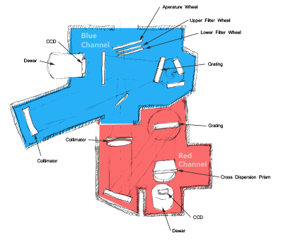
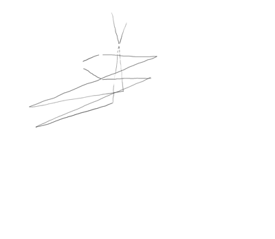

Selected Instrument
 
Would you like to calculation the Integration Time (given a desired signal-to-noise ratio) or the Signal-to-Noise Ratio for an observation of a given exposure time?
Integration Time is the optimal observation time for an exposure based on the parameters you provide in the next step.
Signal-to-Noise Ratio is the quality the spectrum will obtain based on the parameters you provie and a fixed exposure time.